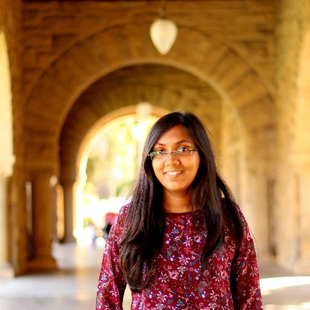

|  | Chinmayee ShahPh.D. Student Gates Building, Office 284 |
I am a Ph.D. student in the Electrical Engineering department at University. I am working with Prof. Philip Levis, and am a part of the SING lab. I received my M.S. from Stanford in 2014. Before that, I completed my undergrad from Indian Institute of Technology, Bombay, in 2011.
Adaptive mesh refinement provides the ability to refine and coarsen simulation domains, to focus computational resources in regions of interest. For a large water simulation, this may be the surface, with ripples and splashes, and regions with turbulence and vorticities. Dynamic tree-based structures such as octrees and OpenVDB provide data-structures that can adapt dynamically. Distributing such simulations efficiently is challenging, because of the complexity of managing neighbors, boundary data and communication between neighboring partitions, and load imbalance. I am currently researching a software stack and techniques to address these issues.
Ebb is a language for writing performance portable physical simulations – Ebb programs can run efficiently on CPUs and GPUs. Ebb supports a variety of domains such as grids, particles, triangular meshes and tetrahedral meshes. It uses a relational data model, that is flexible enough to capture these domains, and abstract and informative enough to parallelize the code correctly. For more details, demos and tutorials on Ebb, check out this page.
Nimbus is an asynchronous many task based framework, for running computations in the cloud. It automatically schedules and load-balances computations across nodes, and provides fault-tolerance. Execution templates allows Nimbus to run tasks at rates a magnitude higher than Spark, while keeping the flexibility of dynamic scheduling. More information about Nimbus is available here. We have implemented several applications and a physical simulation with Nimbus.
Large projects such as kernels, drivers and libraries follow a code style, and have recurring patterns. In this project, we explored learning based code recommendation, to use project context to give meaningful suggestions. Using word vectors to model code tokens, and neural network based learning techniques, we were able to capture interesting patterns, and predict code that cannot be predicted by a simple grammar and syntax based approach as in conventional IDEs. We achieved a total prediction accuracy of 56.0% on Linux kernel, a C project, and 40.6% on Twisted, a Python networking library. The complete project report is available here and the code is on github here.
Droptail queuing is a simple way of managing queues where internet switches buffer packets till their internal memory is full, and ignore and drop packets that arrive once their memory is full. While simple, droptail can perform poorly in practice. With memories becoming cheap, and buffers becoming large, it can cause large packet delays for latency sensitive applications. Active queue management techniques drop packets even before the buffer is completely full. CoDel is a famous AQM algorithm, that drops packets that stay in the queue above a target for a period of time. In this project, we emulated CoDel with Mahimahi, to reproduce the original results, and we also evaluated CoDel's performance with faster varying bandwidths, using a 4G trace. More details about the implementation and results are here.
PhysBAM is a physics based simulation library capable of simulating various phenomenon like compressible and incompressible fluids, rigid and deformable solids, coupled fluids and solids, fracture and fire. Parallelizing a simulation by creating a separate process per partition on a single node can result in skewed work load across processors. For example, one process may be in charge of regions that contain mostly air, resulting in little actual work. Over-partitioning can solve this problem, but can result in large amount of on chip communication. Also, over-partitioning does not work well for linear solves as in projection, to enforce compressibility. In this project, we used thread queues to divide work more evenly, with less overhead. For stages like projection, which do not perform well with excessive sub-division, we used fewer threads to operate on the same data. For stages like advection, we added guards to check for water, avoiding wasteful work. More details about the project and results are available here.
Co-operative communication with relay assistance helps in enhancing the capacity of point to point links. Presence of multiple relays provides multiple paths from the source to the destination. With no channel state information at the transmitter, these paths can be used to either obtain a high communication rate or a low probability of error. We can trade off one of these quantities for the other. In this project, I derived a lower bound on the error probability at the destination as a function of the communication rate, assuming a finite time for communication. More details and derivations are in the project report here.
Ebb: A DSL for Physical Simulation on CPUs and GPUs
Gilbert Bernstein, Chinmayee Shah, Crystal Lemire, Zachary DeVito,
Matthew Fisher, Philip Levis, and Pat Hanrahan
ACM Transactions on Graphics (TOG) 35, no. 2 (2016): 21.
Distributed Graphical Simulation in the Cloud
Omid Mashayekhi, Chinmayee Shah, Hang Qu, Andrew Lim, and Philip Levis
arXiv preprint arXiv:1606.01966 (2016).
Scalable, Fast Cloud Computing with Execution Templates
Omid Mashayekhi, Hang Qu, Chinmayee Shah, and Philip Levis
arXiv preprint arXiv:1606.01972 (2016).
System Architecture Support for Green Enterprise Computing
Maria Kazandjieva, Chinmayee Shah, Ewen Cheslack-Postava,
Behram Mistree, and Philip Levis
In Green Computing Conference (IGCC), 2014 International, pp. 1-10. IEEE, 2014.
Decoupling Runtime and Application Data in Geometrical Simulations
In 2014 Workshop on Supporting Diversity in Systems Research (Diversity 14). 2014.
Liszt Updates at
PSAAP II review, Stanford, May 2016.
Running Parallel Simulations Across Heterogeneous Processors at
PSAAP II review, Stanford, December 2015.
Decoupling Application and Runtime Data in Graphical Simulations at ISTC-VC retreat, October 2014.